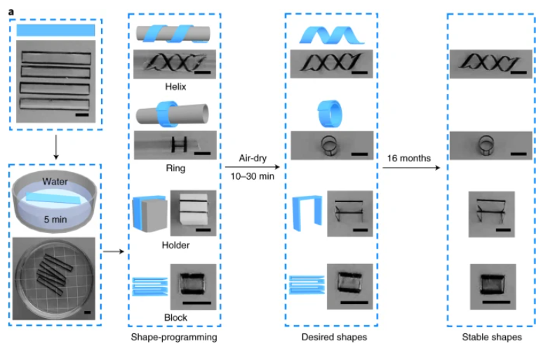

Around 368 million tons of plastics were produced worldwide in 2019, with most ending up in landfill or the natural environment. It's not acceptable, and thanks to developments highlighted in this paper, perhaps changes are just around the corner.
In the paper "Hydroplastic polymers as eco-friendly hydrosetting plastics" by Wang et al, we are introduced to a sustainable hydrosetting method used to process a new hydroplastic polymer made from cellulose cinnamate (CCi). These transparent membranes are robust, durable, and can be repeatedly reprogrammed into other 2D/3D shapes using water.

They are constructed from cellulose, the most abundant natural polymer on earth, and programmed into various 2D/3D shapes in wet state, before being fixed after air-drying. The polymers can be processed and reprogrammed to other shapes more than 15x using just water. How's that for sustainability!
It's markedly different from classical processing methods which involve expensive and complex machines, harsh conditions, or high temperatures.

It offers a pathway to re-use plastics, and through integration with other bioplastics with properties like biodegradability, perhaps we could see a completely circular plastic system with greatly reduced production operations.
Want to get involved?
Contact us at peter@bluetechbase.com